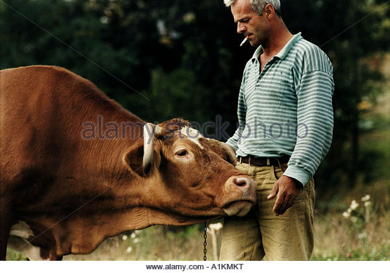

The name originates from the Hungarian "gulyás". The word "gulya" means "herd of cattle" in Hungarian, and "gulyás" means "herdsman" or "cowboy".
The word gulyás originally meant only "herdsman", but over time the dish became gulyáshús (goulash meat) – that is to say, a meat dish which was prepared by herdsmen. Also in medieval times the Hungarian herdsman of Central Europe made use of every possible part of the animal, as was common practice. As meat was scarce, nearly all of the animal was often used to make the soup; even part of the hide that provided foot protection was considered a necessity.
Today, gulyás refers both to the herdsmen, and to the soup. From the Middle Ages until well into the 19th century, the Puszta was the home of massive herds of cattle. They were driven, in their tens of thousands, to Europe’s biggest cattle markets in Moravia, Vienna, Nuremberg and Venice. The herdsmen made sure that there were always some cattle that had to be slaughtered along the way, the flesh of which provided them with gulyáshús.